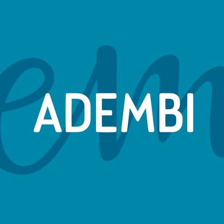

Asociación de Esclerosis Múltiple de Bizkaia: una entidad sin ánimo de lucro que acompaña a personas con esclerosis múltiple y a sus familias.

familias beneficiarias
Servicios de apoyo social y sanitario para personas con esclerosis múltiple, adaptados a las necesidades de cada persona.
Sesiones individuales y grupales para controlar la espasticidad, mantener el rango articular y trabajar el equilibrio.
Participación en proyectos de investigación con tecnología de rehabilitación, como el estudio de un exoesqueleto portátil para practicar la marcha.
"Una red de apoyo para que la esclerosis múltiple no frene la vida de nadie."
ADEMBI es una de las entidades con las que colaboramos en el Vivero de Empresas. Aquí puedes describir el proyecto conjunto: en qué consiste, qué aporta cada parte y cómo se beneficia la comunidad.
Hablemos de la colaboración →